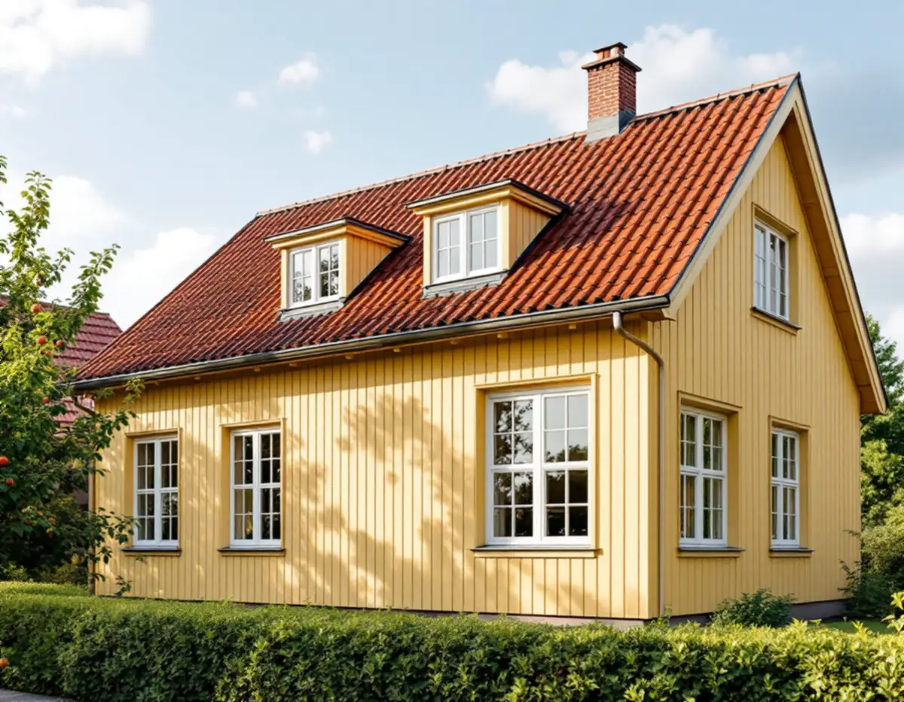
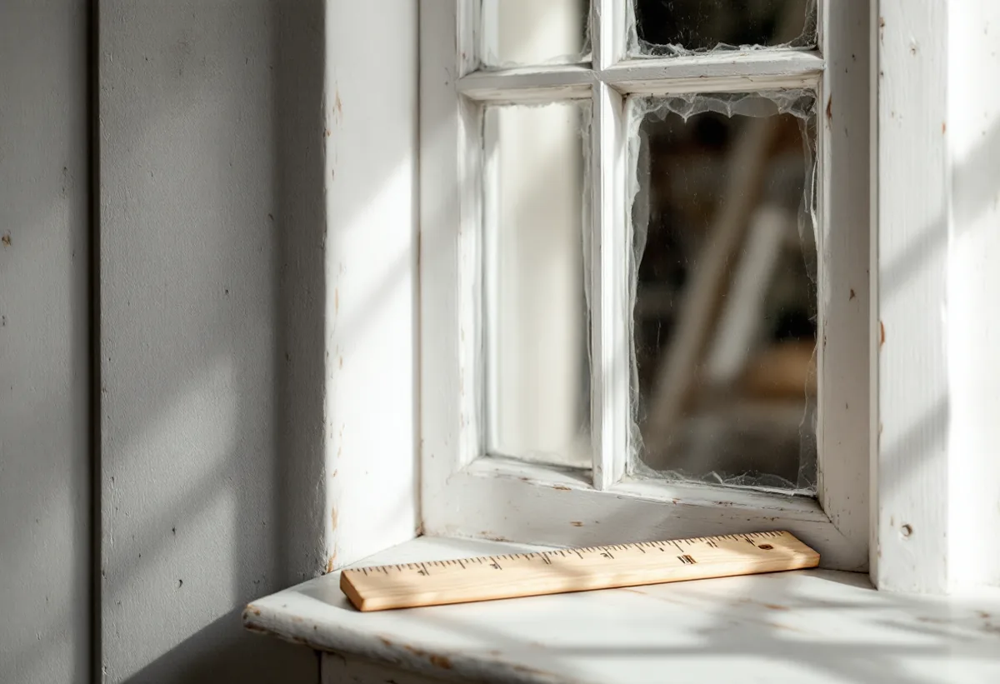

Platsbesök
Vi bedömer karm, bågar och glas, mäter upp varje fönster och noterar spröjs, mittpost och fasadliv.
I Bromma är det ofta fönstren som avslöjar husets ålder: småspröjsade rutor i Äppelviken, tvåluftsfönster i liv med panelen på småstugorna och en fri fönstersättning på funkisvillorna i Södra Ängby. Geal Entreprenad AB byter och renoverar fönster i hela Bromma, mäter upp profiler och indelning innan något beställs och lämnar ett skriftligt kostnadsförslag efter ett gratis platsbesök.

Stockholms stads vägledning Varsam utveckling av småhus- och villaområden beskriver hur Brommas trädgårdsstäder fick olika stilideal. I Äppelviken blev det nationalromantiska inslaget tydligt, med branta takfall, stor formrikedom och fönster med småspröjsade rutor. I 1920-talets trädgårdsstäder, som Nockeby, Höglandet, Ålsten och Smedslätten, blev husen enklare och fasaderna symmetriskt uppbyggda.
Småstugorna i Norra Ängby och Olovslund byggdes efter typritningar som enligt vägledningen styrde utformningen på en detaljerad nivå, även fönstren. I de tidiga utbyggnadsfaserna dominerar tvåluftsfönster med en spröjs. Senare blev tvåluftsfönster utan spröjs vanliga, men även andra fönstertyper förekommer, och fönstren sitter placerade i fasadliv.
Södra Ängby skiljer sig från båda. Där fick villorna modernismens formspråk med kubiska volymer och en oregelbunden fönstersättning. Södra Ängby och Ålstensgatan är utpekade som riksintressen, och vägledningen räknar ursprungliga byggnadsdetaljer som fönster, entrédörrar och räcken till det som bär trädgårdsstädernas karaktär.

På stadens sida om fönster och dörrar står det att lovfrågan beror på vilken byggnad och fasad ändringen gäller. Som exempel på ändringar nämns att byta material eller kulör på fönster, att ändra dimensioner, proportioner eller profilering på karmar, bågar och spröjsar och att lägga till spröjs eller ta bort mittposten. Staden påpekar att ett hus kan ha karaktäristiska fönster eller en tidstypisk fönsterindelning.
Sedan 1 december 2025 krävs normalt inget bygglov för fasadändringar på en- och tvåbostadshus. Utökad lovplikt gäller däremot om huset är särskilt kulturhistoriskt värdefullt, ligger i ett värdefullt område eller om detaljplanen skyddar särskilda värden. Stadsmuseets klassificeringskarta ger en första indikation, men alla byggnader är ännu inte inventerade, och detaljplanen går att läsa i Bygg- och plantjänsten.
För en Brommavilla blir det konkret. Att ersätta en småspröjsad båge med helt glas, ta bort mittposten i ett tvåluftsfönster eller byta trä mot ett annat material är just de ändringar staden räknar upp. Även när bytet är lovfritt ska varsamhetskravet följas.
Krävs bygglov vill staden ha en fasadritning i skala 1:100 där material och kulörer framgår, eller en separat material- och kulörbeskrivning med NCS-koder. En detaljritning i skala 1:10, 1:20 eller 1:50 behövs när en detalj påverkar utformningen, och staden nämner fönster som exempel. Fotografier av huset och fönstren som ska ändras ska också bifogas.
Därför mäter vi upp varje fönster vid besöket: karmens mått, bågarnas och spröjsens bredd, glasindelningen och hur djupt fönstret sitter i väggen. Med de måtten går det att beställa ett nytt fönster som har samma proportioner, och samma uppgifter blir underlag för en detaljritning.
Staden ger också två praktiska råd. Ett nytt eller större fönster kan öka insynen hos grannen, så det är bra att berätta om planerna i förväg, och en ny öppning kan påverka husets bärande konstruktion. Ska även en takkupa eller ett takfönster ses över finns mer under takläggare i Bromma.
Enligt Boverkets energiguide ger det oftast en mindre energibesparing att förbättra befintliga fönster än att byta, men det kostar oftast mindre och kan ge en bättre totalkalkyl när fönstren är i gott skick. Vägledningen råder dessutom att ta tillvara karaktärsskapande material och detaljer så långt det går, och i Bromma sitter mycket av husets karaktär i bågarna.
Boverket listar vad som brukar behövas förutom nytt glas: att byta tätningslist, rikta upp bågar som inte hänger rakt, förbättra drevningen, kitta om och måla samt reparera fuktskador i karmar och bågar. Får innerbågen ett energiglas eller en tvåglaskassett behöver bågen klara den extra tyngden, och gångjärn och beslag kan behöva förstärkas.
Många äldre villor har självdrag, och då kan luften som läcker in kring fönstren vara en del av tilluften. Blir huset tätare behöver tilluften ordnas på annat sätt, till exempel med spaltventiler i bågen eller karmen. Ska fönstren målas om utvändigt samtidigt, läs mer under målare i Bromma.
Vi bedömer karm, bågar och glas, mäter upp varje fönster och noterar spröjs, mittpost och fasadliv.
Stadsmuseets karta och detaljplanen kontrolleras, så att du vet om bytet kräver lov.
Fönster för fönster bedömer vi vad som kan renoveras och vad som behöver bytas.
Fönster, glas, montage, foder och bleck står var för sig i ett skriftligt förslag.
Gamla fönster tas ur, nya monteras med drevning och tätning, och ventilationen ses över.
Foder och bleck görs klart och vi går igenom varje fönster tillsammans med dig.
För ett småhus räknar Skatteverket det som rotarbete att reparera eller byta ut fönster, montera bullerglas och isolerglas, byta fönsterbleck och måla fönster. Avdraget är 30 procent av arbetskostnaden, högst 50 000 kr per person och år och högst 75 000 kr tillsammans med rutavdrag. Själva fönstren och resorna räknas inte.
Du behöver äga villan medan arbetet pågår och bo i den. Geal gör avdraget direkt på fakturan.
Antalet fönster och deras storlek, om spröjs och profiler ska tillverkas efter förlaga, om bågarna kan renoveras och få energiglas i stället för att bytas, hur mycket foder och bleck som behöver göras om och om övervåningen kräver ställning. Efter ett gratis platsbesök får du ett skriftligt kostnadsförslag.
Byta eller renovera fönster.
Fönsterbyte i Stockholm →Takbyte, takbesiktning och plåtarbeten.
Takläggare i Bromma →Trädgårdsstäder, tegel och funkistak.
Takrenovering i Bromma →Trädgårdsstad, karta och 30 m² inom plan.
Attefallshus i Bromma →Vind, bärande väggar och en andra bostad.
Byggföretag i Bromma →Kulörval och färgtyp i trädgårdsstaden.
Fasadmålning i Bromma →Trävillor, småstugor och funkisvillor.
Badrumsrenovering i Bromma →Trädgårdsstäder, småstugor och funkis i Bromma.
Fasadrenovering i Bromma →Småstugornas fönster, kitt och linoljefärg.
Fönsterrenovering i Bromma →Villor i trädgårdsstäderna och lägenheter i smalhus.
Golvläggare i Bromma →Slipa furugolvet och behandla med lut och såpa.
Golvslipning i Bromma →Imkanal, småstugor och trävillor.
Köksrenovering i Bromma →Fasad och interiör i Brommas villastäder.
Målare i Bromma →Kupor, låga tak och bleck i Bromma.
Plåtslagare i Bromma →Verandor, entréer och altaner.
Snickare i Bromma →Lertegel, småstugor och solceller i Bromma.
Takbyte i Bromma →Spara och ersätta gamla tapeter.
Tapetsering i Bromma →Småstugor, trädgårdsstad och prickmark.
Tillbyggnad i Bromma →Hela villan i rätt ordning.
Totalrenovering i Bromma →